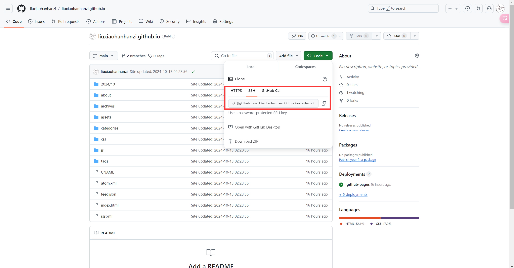
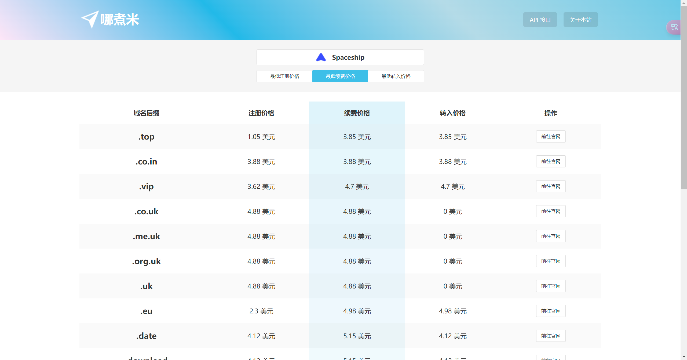
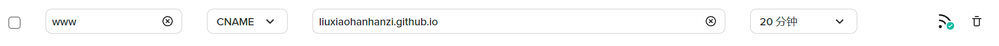
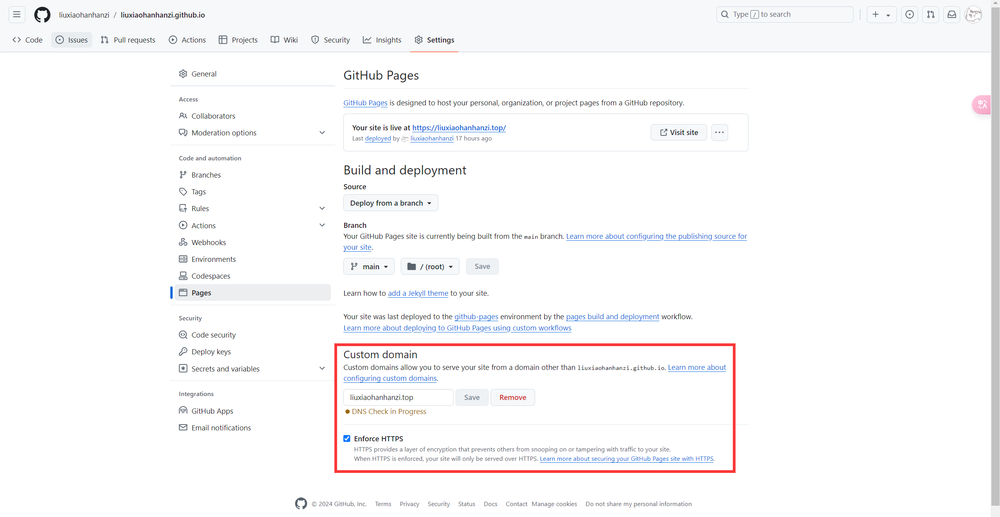
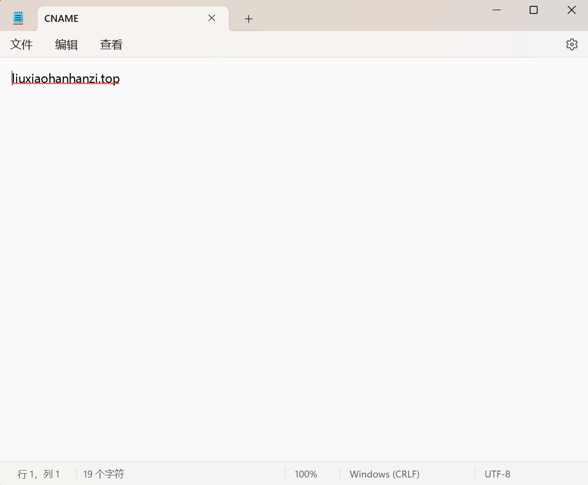
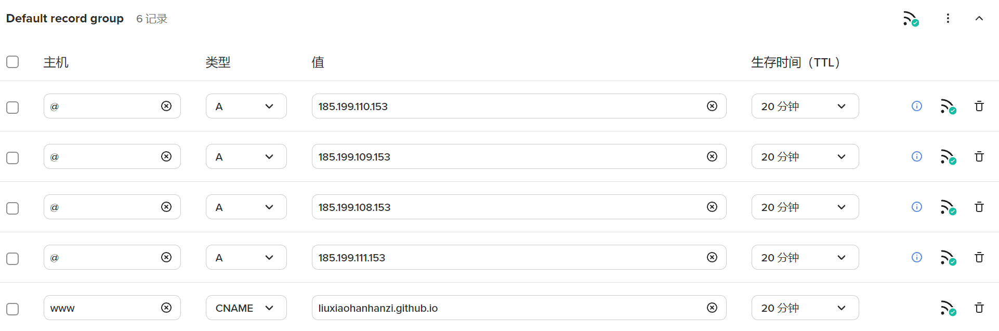

参考 Hexo 官方文档
# Github pages 部署
-
在 GitHub 创建一个名为
username.github.io的公共存储库，其中 username 是您在 GitHub 上的用户名（注意必须要对应上，否则无法使用） -
在仓库界面点击 Code，复制仓库的 SSH 密钥

- 在博客根目录的
_config.yml进行修改：
deploy: | |
type: git # 类型填 git | |
repo: <repository url> # 复制的 SSH 密钥 | |
branch: main # 分支名称 | |
message: # 提交信息可以自定义，不填的则默认为提交时间 |
- 安装关联插件
npm install hexo-deployer-git --save | |
npm install hexo-server --save |
- 此时运行以下代码
hexo clean && hexo d -g |
即可访问 username.github.io 到博客页面
# 域名绑定
- 注册购买域名
国内一般使用阿里云和腾讯云。博主比较穷，在哪煮米比较性价比，选择在 Spaceship 购买 top 域名。（这里付款方式使用 Paypal，绑定大陆银行卡，还要进行邮箱验证）

- 配置域名进行解析
进入 spaceship 的管理页面，添加一条 DNS 记录，类型选择 CNAME，地址值填写 username.github.io：

- 设置 github 仓库
进入刚刚的仓库，点击 settings - Pages，在 Custom domain 中填写自己的域名，save 后勾选强制 https（可能需等一下才能勾选）

- 绑定域名到 Hexo 博客
修改根目录下的 _config.yml ：
# URL | |
## Set your site url here. For example, if you use GitHub Page, set url as 'https://username.github.io/project' | |
url: https://liuxiaohanhanzi.top # 修改为你自己的域名 | |
permalink: :year/:month/:day/:title/ | |
permalink_defaults: | |
pretty_urls: | |
trailing_index: true # Set to false to remove trailing 'index.html' from permalinks | |
trailing_html: true # Set to false to remove trailing '.html' from permalinks |
- 本地文件
在本地博客文件夹的 source 目录中新建 TXT 文件，里面输入自己的域名（无 http 前缀），保存名称为 “CNAME”（无后缀）
完成！
# Github 域名加速
首先附上官方指路文档
添加以下 IP 地址的 A 类型记录到 DNS，host 为 @ ：
185.199.108.153
185.199.109.153
185.199.110.153
185.199.111.153
完成后 DNS 解析如下：

# Github action 自动部署 (未做)
感觉目前没有什么必要做，先码住：教程链接